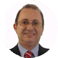
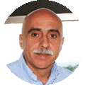
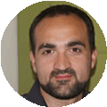
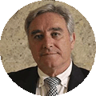
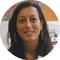
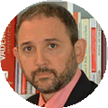

Profesores del Máster de Sexualidad Humana y Salud Sexual
Dirección
-
Dr. Andrés López de la Llave Director
Doctor en Psicología. Profesor titular en la Facultad de Psicología UNED. Director del proyecto de divulgación: “Sexualidad positiva” Fundación UNED. Miembro fundador de la Academia Española de Sexología y Medicina Sexual.
-
Dra. María Pérez Conchillo Codirectora
Doctora en Psicología y Sexóloga. Codirectora del Programa de Formación Universitaria en Salud Sexual UNED. Directora del Instituto Espill de Psicología, Sexología y Medicina sexual.
-
Pilar Carrillo Coordinadora
Psicóloga, master en sexología, especialista en psicología general sanitaria, con una amplia experiencia en el tratamiento de problemas sexuales
Profesores UNED
-
M. Carmen Pérez-Llantada
Doctora en Psicología, profesora titular de la UNED, y dirige desde hace más de 20 años cursos de formación en la UNED, es miembro de la academia española de sexología y medicina sexual
-
E. Ambrosio
Doctor en psicología catedrático de psicobiología en la UNED, especialista en psicobiología y emociones
-
J. M. Buceta
Doctor en psicología profesor titular en la facultad de psicología de la UNED ha escrito decenas de libros y artículos científicos, es especialista en psicología del deporte y el psicología clínica
Colaboradores
-

J. Bustamante
Sexologo es miembro de la academia española de sexología y medicina sexual, y tiene una dilatada experiencia en la terapia de parejas y sexual
-
F. Hurtado
Doctor en psicología. Miembro de la academia española de sexología medicina sexual, presidente de AES, miembro del comité ejecutivo de WAS, trabaja como Sexologo en la sanidad pública de Valencia
-

F. Sánchez
Doctor en medicina, médico de familia, autor de varios libros de sexología, y participante activo en los cursos de formación de sexología para médicos de atención primaria y médicos de familia
-
M. Lameiras
Doctora en psicología, catedrática de psicología de la sexualidad en la Universidad de Vigo, autora de diversos trabajos (libros y artículos científicos) sobre sexualidad y género
-

M. Arasanz
Doctora en Psicología y Sexóloga. Es miembro de la academia española de sexología medicina sexual, y tiene una dilatada experiencia como terapeuta sexual y de parejas
-
C. San Martín
Doctor en medicina terapeuta de parejas. Es especialista en violencia de genero. Es miembro de la academia española de sexología y medicina sexual
-

A. Casaubón
Psicólogo, es miembro de la academia española de psicología y medicina sexual y trabaja como Sexologo desde hace más de 20 años